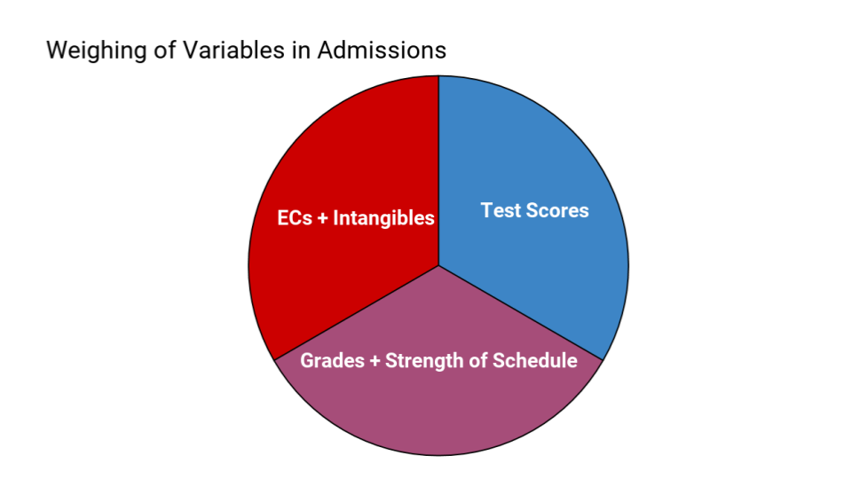
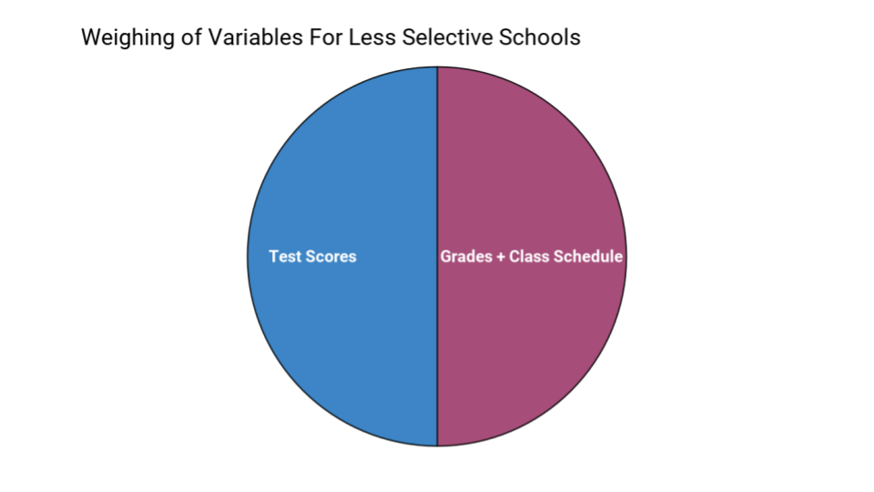
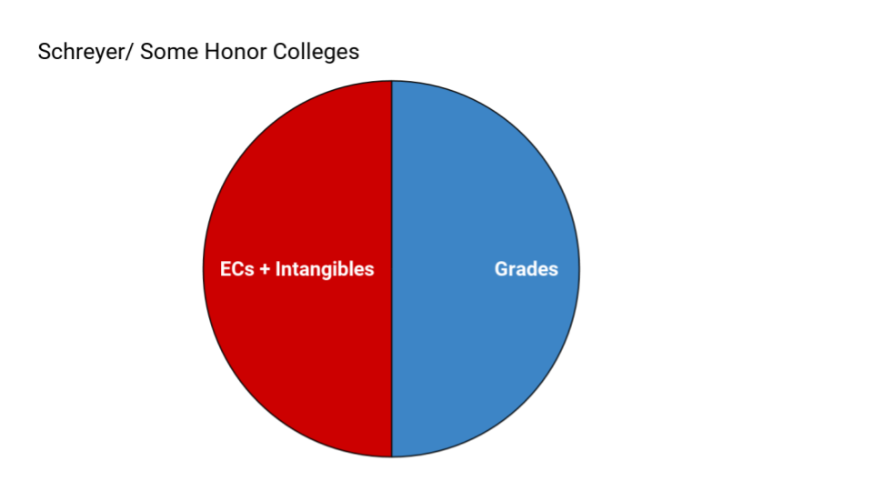

Because I get so many questions about whether test scores matter, how admissions officers weigh your stats, etc, I will give chart approximations showing how these variables are weighed. This is only to give you a sense of how the evaluations work.
This is a chart for how most liberal arts colleges, Ivies, and schools with acceptance rates under ~50% tend to weigh applicant's stats (also how merit aid is often calculated too):
ECs stands for extracurriculars.
The reason the 'intangibles' matter so much is because the grades and test score sections are often the same or very similar between applicants.
Here is a chart for the less selective schools. This often includes large state schools who don't have the time to evaluate things besides grades and scores (the selective state schools more likely use the above chart). For most of you these will be 'safeties':

Sometimes schools will treat you like the above chart if your grades and scores are high enough; they will then evaluate the students who are more 'in the middle' like the first chart.
Of course it is important to remember that these are generalized estimates of how the variables are weighed and there are slight individual differences among colleges. For example, the honors college at Penn State University, Schreyer, doesn't consider scores when considering applicants to the honor college. Thus their graph would be:
The admissions process is, of course, very complicated and these charts are oversimplifications of the process. Still, they can give an idea of how the admissions work and, in general, these charts tend to be close to how the variables are evaluated.